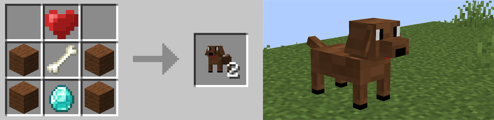

- When you right-click on the Teddy Bear, it will disappear and leave a heart, which restores 50 health points if you right-click it in your main hand. If you break the bear, you will be able to collect it again. WARNING, breaking the Teddy Bear will not perform the same functions as the other plushies.
- If you destroy the Squirrel Plushie with a left click, you will get a huge speed effect (with a slightly distorted screen), but a zombie will appear. This is useful for running away like a coward if your cousin is chasing you with full Netherite. If you right-click on the Squirrel Plushie, it will be collectible with heart particles around it
- Now, we arrive at the last plushie of version 1.0.0 of the mod, the Penguin Plushie! If you place it, you will have the plushie on the ground (of course), LOTS of particles, but also a mini heart that gives the Absorption effect for a very short duration. The mini hearts stack up to a maximum of 5. If you right-click on this plushie, the Penguin Plushie will drop and also spawn a bee!
- Here is the kitten plush that just arrived in version 1.1.0. The kitten plush has 2 features: Left click and you get a jump boost effect (useful in certain situations), and right click, after 5 seconds, you receive a tropical fish (which you can repeat infinitely).

- Here is the dog plush that just arrived in version 1.1.0. The dog plush has 3 features: Left click (to break it) gives you a bone, right click gives you the plush and a bobone that can be placed on the ground. If you right-click on this bobone, you can collect lots of dried seaweed.